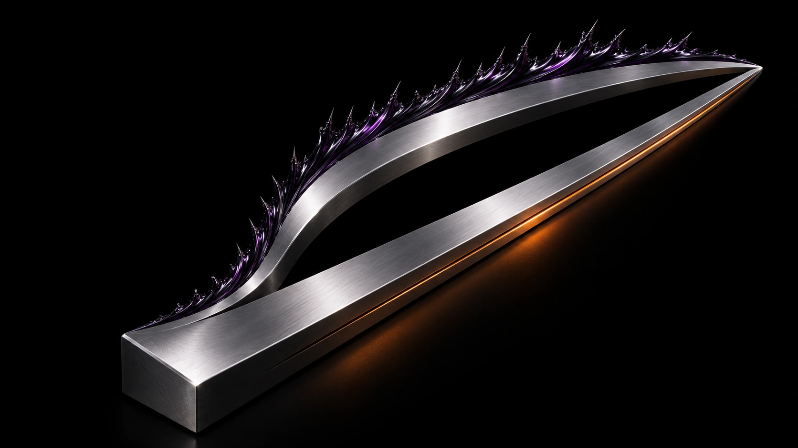

Método
A mesma partida. Dois caminhos.
A rota usada pela operadora serve de referência. Uma alternativa só entra em consideração se mostrar ganho e estabilidade em condições comparáveis.
Comparar as rotas
Compare o percurso.
Escolha uma rota para ver o que entra na avaliação. O desenho ilustra o método, sem dados de desempenho.
O que sustenta a decisão.
Fixar as condições
Registre jogo, região, destino e janela de coleta para manter a comparação justa.
Medir as duas rotas
Observe latência, variação de latência e perda de pacotes em cada percurso.
Explicar a escolha
Registre o que mudou e se a evidência justifica manter a rota ou considerar a troca.
O que entra na comparação
O teste pareado registra jogo e build, região, destino, janela e fonte das medições. A análise estima o tamanho e a incerteza da diferença entre as rotas e verifica se alguma métrica piorou.
Cada resultado vale para as condições descritas no ensaio. Para avaliar conexões já estáveis, a coorte deve ser definida antes da coleta. Relatos de jogadores ficam separados das medições instrumentais.
Catálogo de resultados
Resultados ainda não publicados.
Ainda não há combinações homologadas para filtrar. “Teste não medido” significa ausência de coleta. “Relatório em revisão” pressupõe dados coletados que aguardam análise.